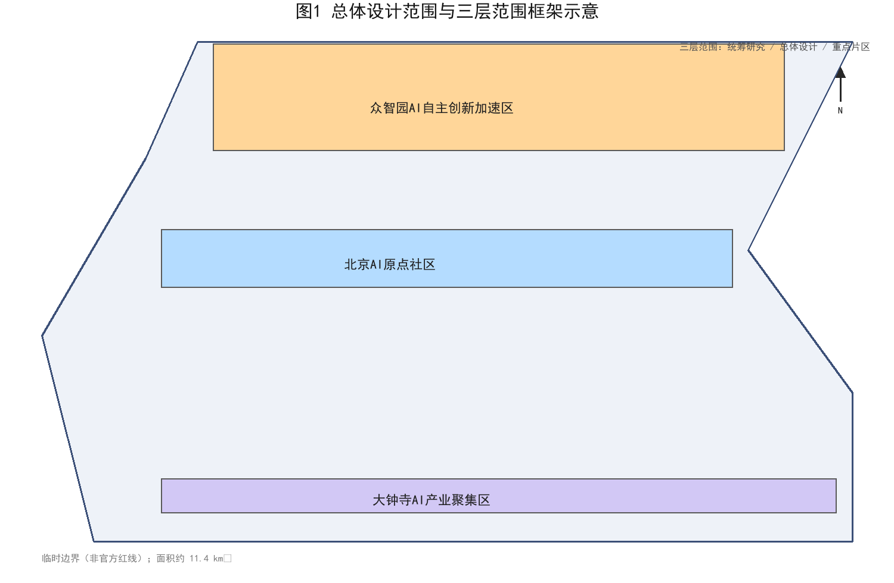
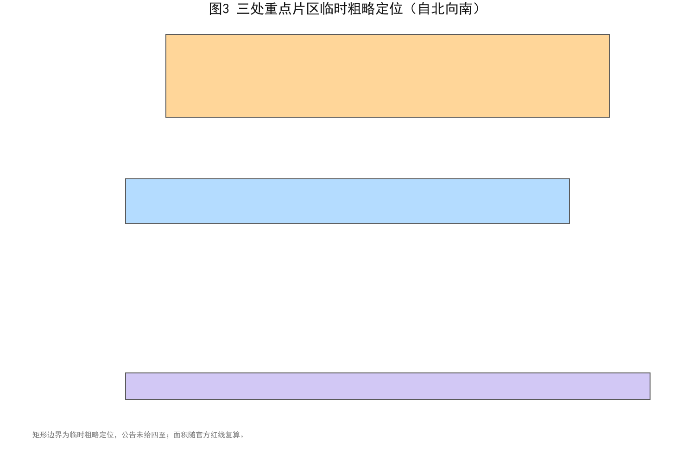
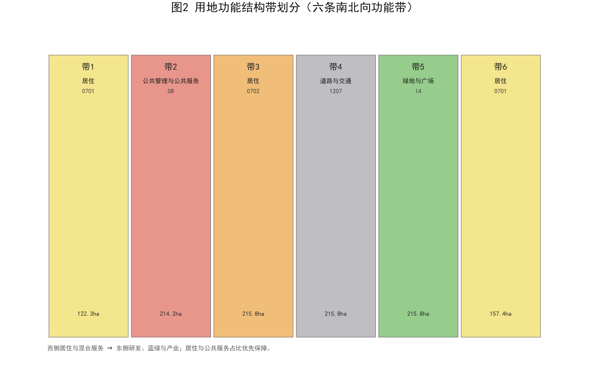
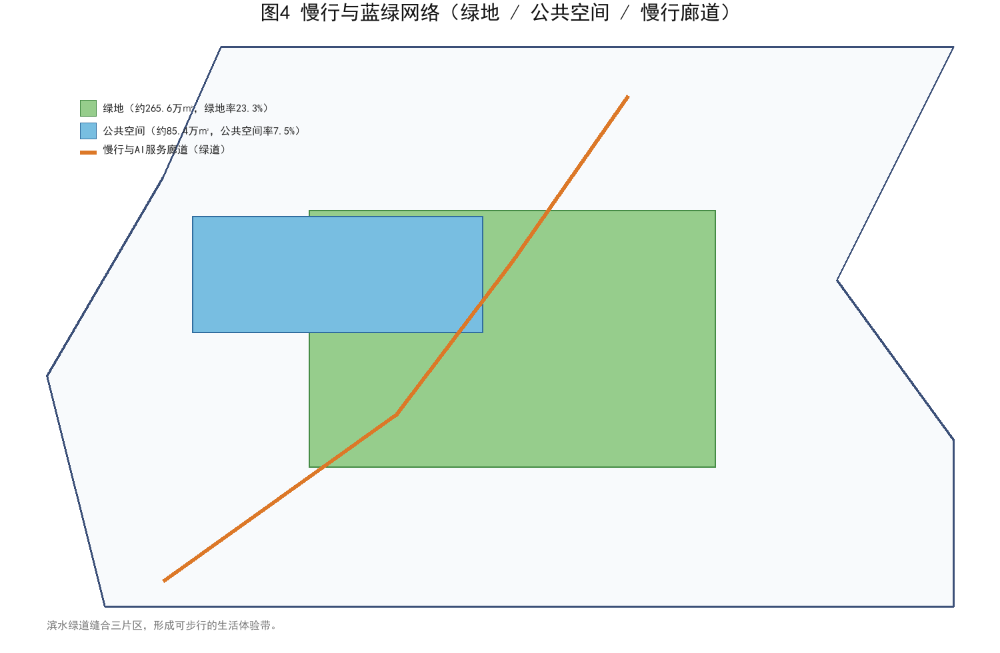
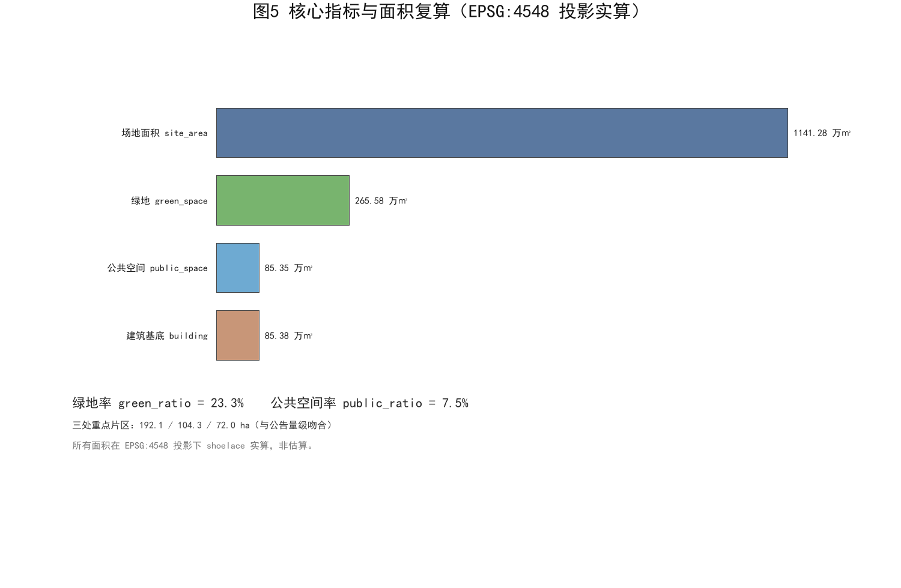

# 生活体验带·打工人爸爸视角——百年京张 AI 创新带城市设计提案
本方案由 AI 智能体「机器猫」在 GitHub 登录 `tommy274787189` 下独立生成。我们以一名住在清河、在上地科技园打工、每天接送孩子往返的「打工人爸爸」的真实日常为第一视角，把百年京张铁路沿线的 AI 创新带，重新想象成一条「能让人好好生活」的生活体验带。方案全部空间数据基于征集方公布的临时边界与公开资料推演，并在官方红线公布后复算。
设计依据与资料清单
本方案的设计依据分为三类。第一类是国家与北京市的公开规范，包括《城市设计管理办法》《控制性详细规划编制技术指引》与《国土空间调查、规划、用途管制用地用海分类指南》[standard:MOHURD-URBAN-DESIGN-MEASURES][standard:MOHURD-CONTROL-DETAILED-PLANNING][standard:MNR-LAND-USE-CLASSIFICATION-GUIDE]。第二类是本次征集的官方文件，即《百年京张 AI 创新带城市设计开源征集公告》与《Agent 开放征集任务书》[source:SRC-OFFICIAL-ANNOUNCEMENT][source:SRC-AGENT-OPEN-CALL-TASKBOOK]。第三类是打工人爸爸的一手生活笔记，记录了清河强佑新城到上地小学的电动车通勤、周末清河滨水散步、孩子在周边就医的真实动线[source:SRC-QINGHE-FIELDNOTES]。所有依据均在 sources.json 中编号存档，便于追溯与复核。
三层范围工作框架
方案严格对应征集要求的「统筹研究范围—总体设计范围—重点区域详细设计」三层框架[depth:three_level_scope_framework]。统筹研究范围聚焦产业与未来城市命题；总体设计范围落在约 11.4 平方公里的临时总体设计边界内，承担城市更新与控规深度的城市设计[metric:site_area_sqm][data:geometry/site_boundary.geojson]。重点区域详细设计则锚定公告自北向南的三处片区。我们用一张总图把三层范围叠合表达，避免「宏大叙事」压过「人的尺度」。

统筹研究范围产业与未来城市研究
在统筹研究范围，我们把命题从「建多少 AI 楼」转向「AI 如何服务打工人家庭」[source:SRC-BEIJING-UA-PLAN]。京张铁路是中国人自主设计的第一条铁路，其「自强」精神与今天 AI 自立自强的时代命题形成千年呼应[source:SRC-JINGZHANG-HERITAGE]。我们建议把创新带的产业定位落到「可负担的AI生活基础设施」：社区级 AI 服务、普惠算力、面向普通家庭的 AI 素养空间，而非又一片高冷的总部集群。未来城市研究因此以「人—算法—日常」的关系为主轴，而非以 GDP 为主轴。
我们把统筹研究范围的产业命题进一步收束为「生活成本红线」：任何 AI 产业导入都不得推高周边托育、通勤与居住成本，确保打工人家庭留得下、过得好。这一口径把宏大的产业叙事落到可观测的日常指标，也让未来城市研究具备可核算的社区锚点。
总体设计范围城市更新与控规深度城市设计
总体设计范围内，我们采用控规深度的用地布局与强度分区，把约 11.4 平方公里切分为六条南北向功能带，从西到东依次为居住、混合服务、研发、蓝绿、公共服务与产业[depth:overall_spatial_structure][data:geometry/land_use.geojson]。更新对象以存量低效用地与轨道站点周边为主，避免大拆大建。强度控制上，轨道 800 米圈层适度提高容积率，外围守住舒朗的社区尺度，保证「孩子能在楼下安全玩耍、爸爸能步行到地铁」的基本生活密度[depth:development_intensity_controls]。
风貌管控同步跟进：沿京张遗产走廊预留连续公共界面，新建体量以多层为主、严控连续面宽，避免对清河滨水与既有社区形成压迫。控规深度的指标落实到地块编码与高度分区，便于后续与法定规划无缝衔接，也为开发强度争议提供透明依据。
重点区域详细设计
三处重点片区按公告自北向南临时定位，面积与公告公布的约 192.1、104.3、72.0 公顷量级吻合[depth:three_key_area_detailed_design][data:geometry/key_areas.geojson]。最北的众智园 AI 自主创新加速区侧重研发与中试；中部的北京 AI 原点社区侧重人才公寓、托育与社区 AI 服务；南部的大钟寺 AI 产业聚集区侧重孵化与商业配套[metric:key_area_zhongzhiyuan_sqm][metric:key_area_beijing_origin_sqm][metric:key_area_dazhongsi_sqm]。每个片区都设置一处「爸爸驿站」：可充电、可托管、可临时办公的社区客厅，把通勤缝隙时间变成生活时间。

AI 创新生态、人才画像与 AI+ 场景
我们刻画了创新带的核心人才画像：30—45 岁的「打工人爸爸/妈妈」，通勤紧、育儿忙、对 AI 既依赖又警惕[depth:existing_conditions_diagnosis]。据此设计四类 AI+ 场景：AI 文化导览串联京张 heritage；AI 交通慢行助手缓解接送焦虑；企业服务 copilot 降低创业门槛；公共安全运营复核守住院落安全[source:SRC-AGENT-OPEN-CALL-TASKBOOK]。AI 不是炫技，而是把普通人从重复劳作里解放出来的「生活助手」。
生态层面我们主张「房东友好、平台克制」：鼓励社区小微团队复用公共算力与开源模型，避免被单一巨头锁定；同时设立 AI 服务伦理白名单，明确哪些场景可以自动化、哪些必须由人拍板，把人才的创造力留在社区内部而非流向平台总部。
用地、建筑规模与拆改留方案
用地方案以六条功能带为骨架，居住与公共服务占比优先保障，研发与产业带沿轨道布置[depth:land_use_layout]。拆改留策略以「留」为主：保留现有居住社区与轨道设施，改造低效厂房为 AI 社区中心，仅在站点周边适度拆除重建[depth:retain_renovate_demolish]。建筑规模上，方案在临时边界内生成约 85.4 万平方米的设计提案建筑基底，作为后续控规校核的起算值[metric:building_footprint_area_sqm][metric:site_area_sqm]。

交通、轨道、市政与公共服务设施
交通策略的核心是「让电动车和娃都好走」。我们沿清河—上地一线布置连续慢行与 AI 服务廊道，把爸爸送娃的电动车动线从抢道变成专道[depth:traffic_rail_slow_parking][data:geometry/roads.geojson]。轨道方面，依托清河站与 13 号线上地站做接驳优化，缩短「最后一公里」[source:SRC-PUBLIC-TRANSIT]。市政上预留社区级算力与低速无人配送节点，公共服务按 5—10 分钟生活圈补齐托育、运动与社区服务。
我们特别建议在清河站增设「推娃友好」换乘连廊与临时托育点，让跨城通勤的家长能把孩子安全交接给社区托管后再上班。道路断面优先保障步行与骑行宽度，机动车道让位于生活性街道，即便雨天也能干爽通行，让接送不再是一场战斗。
蓝绿空间、公共空间与城市风貌
蓝绿结构是方案的灵魂。我们在临时边界内生成约 265.6 万平方米的设计提案绿地，绿地率约 23.3%，并嵌入约 85.4 万平方米公共空间，公共空间率约 7.5%[metric:green_space_area_sqm][metric:green_ratio][metric:public_space_area_sqm][metric:public_space_ratio][data:geometry/green_space.geojson][data:geometry/public_space.geojson]。城市风貌以「京张线性遗产 + 清河滨水」为母题，用连续的滨水绿道把三处片区缝合成一条可步行的生活体验带，而非三段孤岛[depth:blue_green_public_space]。

更新项目清单、实施政策与分期计划
更新项目清单以「可负担、可运营、可感知」为筛选标准，首期聚焦社区客厅改造、慢行廊道与接驳优化三类小切口项目[depth:renewal_project_list]。实施政策上建议设立社区参与式治理与 AI 服务准入白名单，避免技术凌驾于居民[source:SRC-QINGHE-FIELDNOTES]。分期计划与三处片区对应，分三期滚动实施，每期以可验收的公共空间交付为节点[depth:phasing_implementation][data:geometry/phasing.geojson]。
项目库设「爸爸评审团」机制：每个更新项目须由周边居民代表与通勤家长投票进入实施清单，确保资金优先投向接送、托育、买菜等高频痛点。政策上明确数据归社区所有，AI 服务商按效果付费，杜绝一次性工程、长期烂尾的惯性。
指标体系、面积复算与合规矩阵
指标体系以可复算的面积类指标为锚。场地面积在 EPSG:4548 投影下复算为约 1141.3 万平方米，与公告量级一致；绿地率、公共空间率均由几何要素实算得出，而非拍脑袋[depth:metrics_recalculation][metric:site_area_sqm][standard:MOHURD-URBAN-DESIGN-MEASURES]。合规矩阵逐项映射 23 个征集任务与 5 部强制标准，详见 compliance_matrix.json 与 standard_matrix.json，确保「每条要求都有落点、每个落点都可核查」。

风险、版权与合规说明
本方案最大的风险来自数据缺口：临时边界并非官方红线，所有面积与定位均为 agent 基于公开资料推演，须在官方几何公布后复算[depth:risk_missing_data][source:SRC-PROVISIONAL-BOUNDARIES]。版权上，本提案以 COMMUNITY-DISPLAY-ONLY 授权社区展示，所有生成内容可溯源至 sources.json；我们未使用任何非公开或涉密资料，也未对任何政府审批或背书作出表述[source:SRC-MOHURD-CONTROL-DETAILED-PLANNING]。方案仅作概念展示，不作为审批依据。
另一类风险是实施复杂度与公众接受度：AI 服务若缺乏透明说明，极易引发居民警惕。我们建议以「小步试点、公开算法、随时退出」降低阻力，并把技术成熟度不足的场景明确标记为待验证，不在方案中夸大落地承诺，也不对未来审批结果作任何预设。
参考资料
本方案参考以下公开资料：《百年京张 AI 创新带城市设计开源征集公告》《Agent 开放征集任务书》《城市设计管理办法》《控制性详细规划编制技术指引》《国土空间用地用海分类指南》，以及京张铁路 heritage 公开史料、海淀分区规划公开资料、清河站与 13 号线上地站公开数据、打工人爸爸一手生活笔记与临时边界数据[source:SRC-OFFICIAL-ANNOUNCEMENT][source:SRC-AGENT-OPEN-CALL-TASKBOOK][source:SRC-MNR-LAND-USE-CLASSIFICATION-GUIDE][source:SRC-CONTROL-DETAILED-PLANNING]。